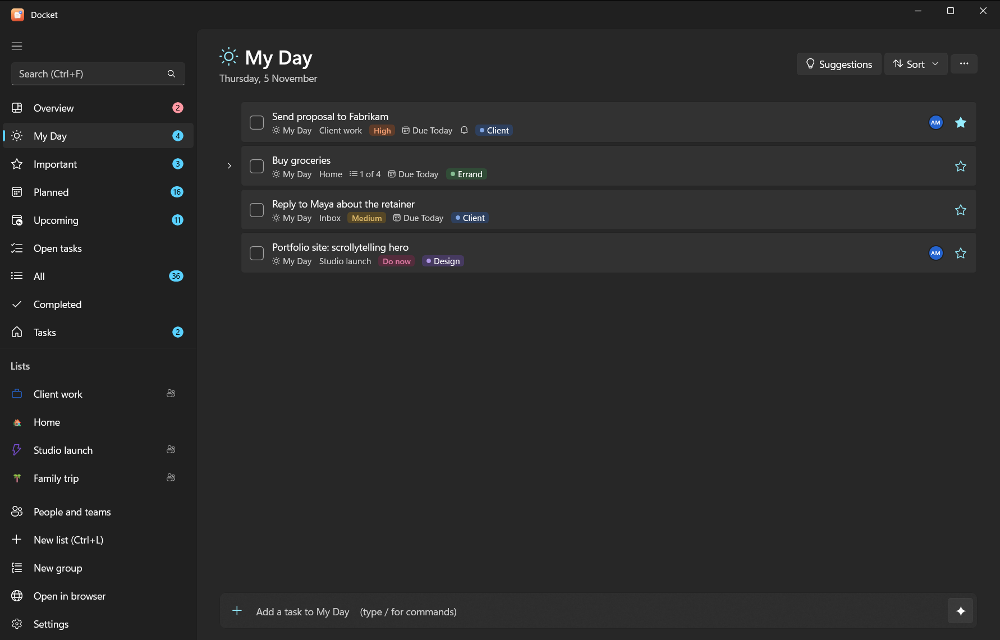
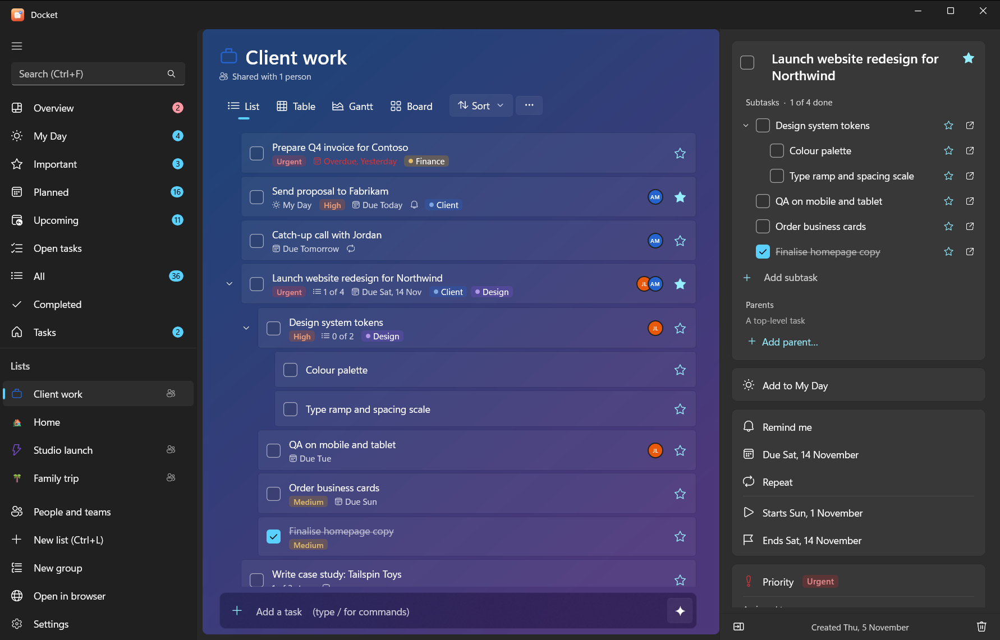
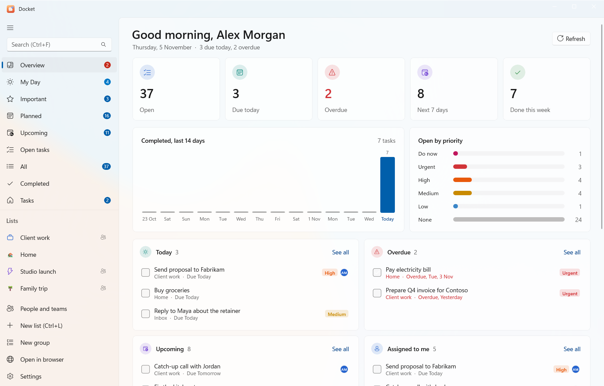
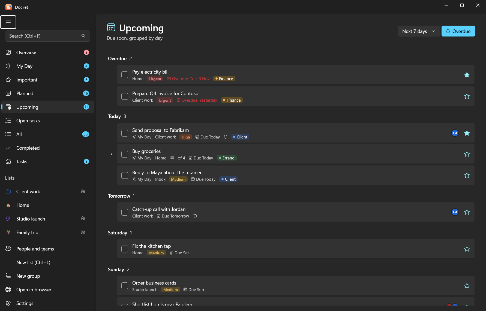

Use Docket
The Windows app
Docket for Windows works like Microsoft To Do, with subtasks, boards, people and AI added. Open it from the Start menu (Docket). If you haven't installed it yet, see install on a Windows PC.


#The sidebar
The left side has your smart lists at the top and your lists underneath.
| Smart list | What's in it |
|---|---|
| My Day | Tasks you picked for today. It starts empty each morning. Suggestions offers overdue, due and recently added tasks |
| Important | Starred tasks |
| Planned | Tasks with a due date, grouped Earlier, Today, Tomorrow, This week and Later |
| All | Every open task |
| Completed | Finished tasks |
| Tasks | Your default list (Inbox) |
| Overview | A dashboard: counts, the last 14 days, priorities, today, overdue, upcoming, assigned to you and progress per list |
| Upcoming | What's due soon, day by day |
| Open tasks | Everything unfinished, across all lists |
Hide the ones you don't use in Settings > Smart lists (there's also "Hide empty smart lists automatically").


#Lists and groups
- New list: New list at the bottom of the sidebar, or Ctrl+L. New group makes a group.
- Groups hold several lists (in Vikunja they're parent projects).
- List options (the … button at the top of a list) has Rename list, Colour, Move to group, Icon…, Background…, Share list…, Show completed tasks, Copy list and Delete list.
- Drag a task onto a list in the sidebar to move it there. Drag tasks up and down to reorder them when the list is sorted by "My order".
Lists can look the way you like, with an icon and a background: see views, boards and list styles.
#Adding tasks
The add bar sits at the bottom of every list. Type and press Enter. Quick-add words set the due date and priority as you type:
Send invoice friday !3
Call the bank tomorrow
Renew passport in 3 days !5Type / for commands: /s search, /x mark matches done, /m add them to My Day, /i star them, /ai plan with
AI. Everything about the add bar: quick add and commands.
#Task details
Click a task (or press Enter) to open the details pane on the right. There you can set:
- Subtasks (Add subtask) and Parents (Add parent…); see below
- Checklist: the older steps, with Turn into subtasks
- Add to My Day and Important (the star)
- Set priority: none, low, medium, high, urgent or do now
- Add start date, Add end date, Add due date and Remind me
- Repeat: daily, weekdays, weekly, monthly, yearly or custom (every N days, weeks, months or years)
- Assign to: people who can see the list (people and sharing)
- Categories: coloured labels (type a new one and press Enter)
- Add file: attach and open files
- List: move the task to another list
- Add note
- Activity: who created it and when, when it last changed and when it was completed
Delete task is at the bottom of the pane, with Undo for a few seconds afterwards. (Settings > General > "Confirm before deleting" asks first.) Esc hides the pane.
Small icons on each task row show what it has: notes, files, reminders, repeats, subtask progress, priority and assignees.
#Subtasks and steps
Subtasks are full tasks of their own: each has its own star, dates, reminders and subtasks, and they nest as deep as you need. A task can even sit under several parents (for example "Book venue" under both "Launch party" and "Q4 budget").
- Add one in the details pane under Subtasks (Add subtask; quick-add words work), or with the CLI:
docket sub 12 "Book the venue friday". - Put an existing task under another with Parents > Add parent…, or
docket parent 15 12. - Expand or collapse subtasks with the arrow next to a task, or → and ←.
Steps (the Checklist) are the simple list inside a task, like Microsoft To Do's. Turn them into subtasks
with Turn into subtasks in the details pane, or docket convert <id>.
#Views and boards
Each list can be shown as a List, Table, Gantt chart or Board, with the view buttons at the top of the list. Boards have columns you can name, colour and give an icon. See views, boards and list styles.
At the top of a list you can also sort (my order, importance, due date, A–Z or creation date), show or hide completed tasks, search, and copy the list as text.
#People, teams and sharing
The People and teams page (in the sidebar) lists everyone you work with. Add people, make teams, share lists and assign tasks: see people, teams and sharing.
#AI planning
Describe what you need ("plan the launch next week") and the AI drafts a nested plan for you to check before anything is added. Turn it on in Settings > AI: local with Ollama, or Claude, ChatGPT or Gemini with your own key. See AI planning in the app.
#Reminders
Reminder pop-ups come from the Docket notifier, which runs in the background so they arrive even when the app is closed. They have Complete and Snooze 10 min buttons; clicking one opens the app.
- Installed with
-Reminders? It starts at sign-in already. - Otherwise start it with
docket notify --watch, or run the installer again with-Reminders. - Settings > Reminders can play a sound.
Not seeing them? See troubleshooting.
#Settings
| Section | What's there |
|---|---|
| General | Confirm before deleting, where new tasks from smart lists go, theme (light, dark or system) |
| AI | Provider (Local, Claude, ChatGPT, Gemini or Off), model, API key, a test button |
| Smart lists | Show or hide Important, Planned, All, Completed; hide empty ones |
| Reminders | Sound on or off |
| Connection | Server address and API token, Test and save |
| Keyboard shortcuts | The full list (shortcuts) |
#Open in browser
Open in browser opens Docket web (http://localhost:3457) when it's running, or the server otherwise.
#If the server isn't running
When the task server on your PC has stopped, the app starts it again and carries on; you'll see "Starting your task server…" for a few seconds. If it can't, it offers Start server and retry. See if the server stops.
#Repeats that only Docket understands
Weekdays, yearly, and every-N-months or every-N-years repeats are handled by Docket itself (shown with a "↻" category). They move to the next date when you complete them in Docket, the CLI, Android or through the AI connector, but not in Vikunja's own web app. Daily, weekly, monthly and every-N-days or weeks repeats work everywhere.